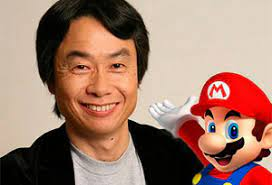
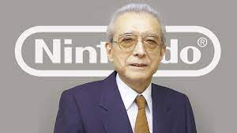
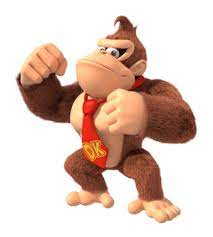
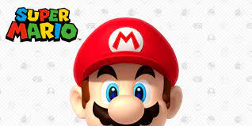
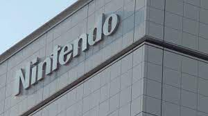
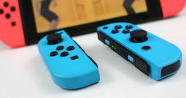
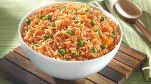
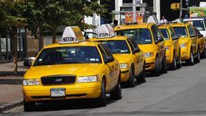
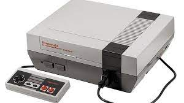

Nacido el 22 de noviembre de 1859 y fallecido en enero de 1940. Se le conoce por ser el fundador y primer presidente de Nintendo. Yamauchi vivió en Kyoto, Japón, donde también instaló la sede de su empresa. Fusajirō siempre ha estado relacionado con todos los presidentes que ha tenido Nintendo, excepto con los tres últimos, Satoru Iwata, Tatsumi Kimishima y Shuntaro Furukawa.
 Fue en 1981 cuando se presentó por primera vez al mundo uno de los personajes más emblemáticos de los videojuegos. No era mucho, solo un puñado de píxeles de colores en una pantalla granulada, una figura que intentaba salvar a su novia de un mono gigante llamado Donkey Kong… En la década de los 90, Super Mario Bros no solo había conseguido rescatar a su novia de las garras del simio, sino que era la cara visible de Nintendo y había conquistado el mundo de los videojuegos.
 Fusajirō Yamauchi fundó su empresa el 23 de septiembre de 1889 como Nintendo Koppai (任天堂骨牌).Gran culpa de este aumento de la demanda fue que estas barajas de hanafuda, gracias a su calidad, fueron adoptadas por los yakuza para sus partidas de cartas. Por ello, Yamauchi se vio forzado a ampliar el negocio para satisfacer la demanda, que siguió aumentando con el tiempo, convirtiendo a Nintendo en una empresa muy próspera y conocida en todo el país en los años venideros. Otro de los hechos importantes durante su mandato, fue que en 1902 se convirtió en la primera empresa japonesa en fabricar y vender con éxito barajas occidentales (principalmente baraja inglesa).
 El primer producto que fabrica Nintendo, diferente de los naipes, son paquetes de arroz instantáneo. El negocio resulta un fracaso. Pero ésto no apagó el ánimo del presidente por avanzar, le seguirían un negocio de taxis llamado Daiya, con éxito inicial, pero que finalmente dejó de ser rentable y los “love hotel”, un tipo de hotel japonés que ofrece total intimidad a parejas que desean pasar un rato a solas, quien sabe si por el carácter especial de los japoneses, el negocio tampoco prosperó.
 En 1977 una cercana amistad de Hiroshi Yamauchi le presenta a su hijo, Shigeru Miyamoto. En un principio Miyamoto diseñó las decoraciones de las máquinas recreativas de Nintendo. Una de esas recreativas “Radar Scope” supone un rotundo fracaso en Estados Unidos, y Yamauchi le encarga a Miyamoto, bajo la supervisión de Yokoi, el diseño de un nuevo videojuego, un juego con el que Miyamoto iniciará una carrera meteórica: “Donkey Kong”.
Los ochenta fueron los mejores años de la nipona. Gunpei Yokoi idearía las “Game&Watch”, una serie de máquinas portátiles que se vendieron como churros y permitieron a Nintendo embarcarse en un nuevo y emocionante proyecto, su primera consola de cartuchos intercambiables: FAMICOM (NES en occidente), con una potencia mucho mayor que la Atari 2600 y con los juegos de Miyamoto. En el 89 llegaría la famosa Game Boy, de nuevo de la mano de Gunpei Yokoi, inaugurando el reinado de Nintendo en el sector portátil (que se mantiene hasta hoy).